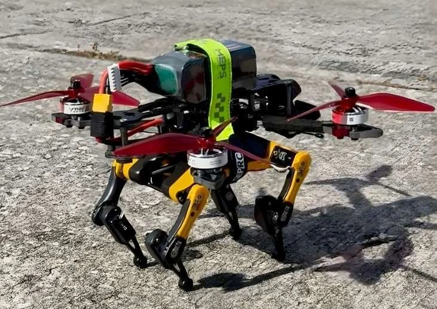
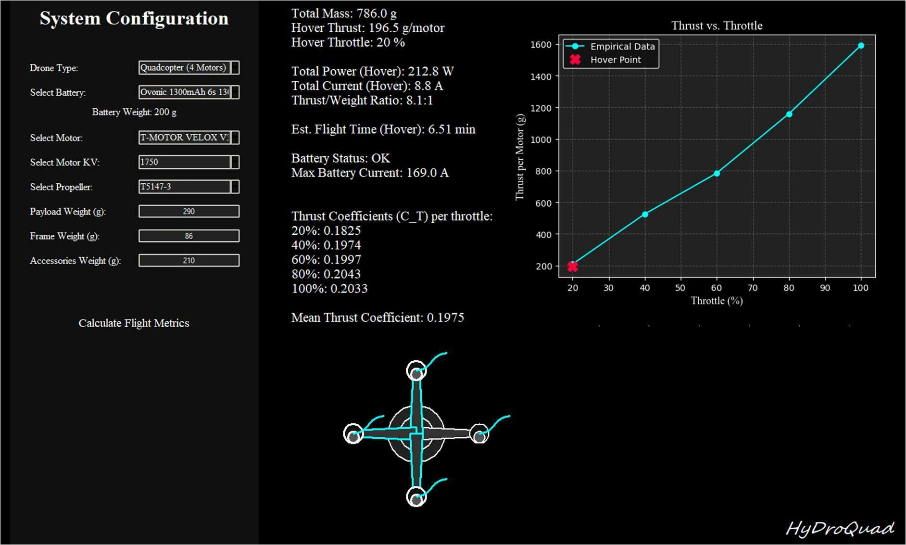
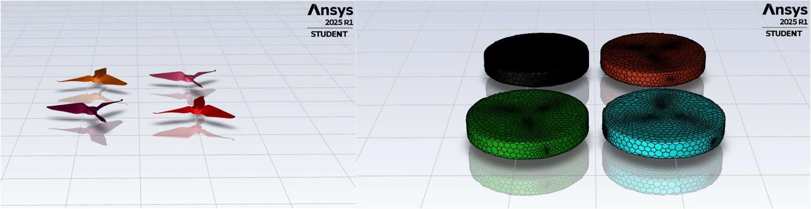
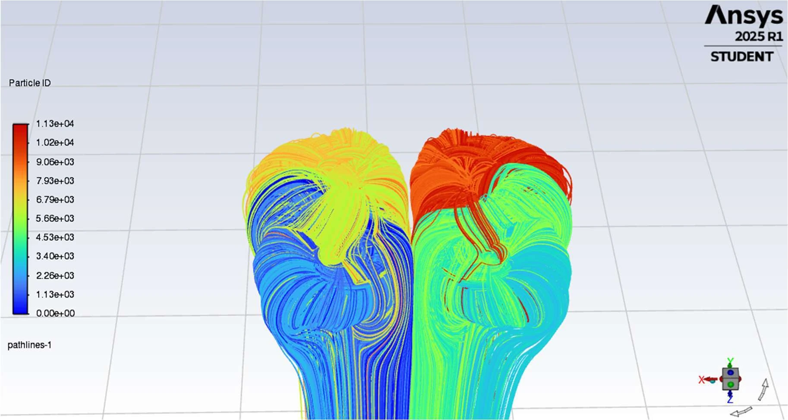
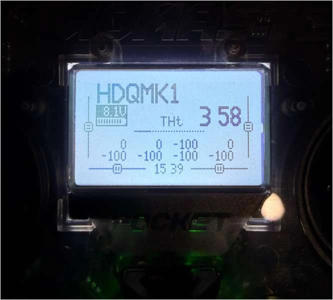

Robotics Research / HDQ-MK1
HyDroQuad
A lightweight drone-quadruped platform. Designed to walk around obstacles, with flight as another way through.
- MK1 system mass
- 786 g
- Quadruped payload
- 290 g
- Predicted hover endurance
- 6.51 min
- Initial timed flight
- 6 min 02 s

01 / The Challenge
One platform.
More ways to move.
Wheels, legs, and rotors each solve a different mobility problem. HyDroQuad explores what happens when a small quadruped and a multirotor share one platform: ground movement for ordinary terrain, and short flights when an obstacle makes walking impractical.
My work connects the mechanical interface, propulsion sizing, simulation, and prototype testing. The first question was practical: could the aerial subsystem lift the combined vehicle with enough margin left for control?
The research is motivated by planetary exploration, but the work presented here is Earth-based. HDQ-MK1 demonstrated lift-off and hover; autonomous walking-to-flight transitions and operation in planetary conditions remain future work.
Research by Haitish Gandhi and Cagri Kilic at Embry-Riddle Aeronautical University, with partial support from an IGNITE undergraduate research grant.
02 / System Design
The connection matters as much as the components.
The platform pairs a carbon-fiber multirotor frame with a Petoi Bittle quadruped. A custom mounting interface, the merger component, connects the two and keeps the combined center of gravity aligned with the thrust axis.
The SolidWorks assembly adapted existing platform geometry rather than starting every part from scratch. A parametric interface made it possible to adjust battery placement, leg spacing, and rotor clearance as the design evolved.
An early mass estimate of about 1.1 kg helped set the lift requirement. The refined MK1 budget came to 786 g, including the 290 g quadruped and a 200 g battery. A minimum 2:1 thrust-to-weight ratio was used as the design target.


Where the mass goes
- Quadruped payload
- 290 g
- Battery
- 200 g
- Frame
- 86 g
- Accessories
- 210 g
- Total
- 786 g
Model configuration: four rotors, T-Motor Velox V3 motor data, T5147-3 propellers, and a 6S 1300 mAh battery.
03 / Performance Model
Size it before building it.
A MATLAB thrust calculation established the starting point. A Python GUI then brought the component selections and mass budget together, using empirical motor-propeller data to estimate hover throttle, electrical demand, thrust margin, and endurance.
The model interpolates between measured component data points and assumes 80% usable battery capacity for its endurance estimate. It also compares predicted hover current with the selected battery's rated continuous discharge limit.


| Metric | Prediction | What it tells us |
|---|---|---|
| Hover thrust per rotor | 196.5 gf | One quarter of the vehicle's weight, about 1.93 N. |
| Hover throttle | 20% | Interpolated from the selected motor-propeller data. |
| Hover electrical power | 212.8 W | The modeled power demand for all four motors. |
| Hover current | 8.8 A | The predicted load on the battery at hover. |
| Maximum thrust-to-weight | 8.1:1 | An estimate based on component data, before installed-system losses. |
| Hover endurance | 6.51 min | The prediction used for comparison with the initial flight test. |
04 / Aerodynamics
Four rotors don't behave like four isolated tests.
Component bench data is a useful starting point, but nearby rotors change each other's airflow. The paper's CFD setup used nominal 5-inch rotors at 5.35-inch center spacing, leaving just 0.35 inches between adjacent tips.
Ansys Fluent was used to examine that interaction with a steady rotating-reference-frame model, k-omega SST turbulence closure, and local mesh refinement around the blades. The rotor study ran for 1,000 iterations, monitoring residuals and force histories.




The design takeaway
Rotor spacing belongs in the system trade study, not just the packaging drawing. The flow visualization showed wake merging and interaction that isolated-motor curves do not capture. The CFD model excluded the quadruped frame, so it does not establish the complete vehicle's aerodynamic performance.
05 / Initial Flight Testing
From a prediction to a flying prototype.
Integration checks covered motor direction, the flight controller and ESC, the radio link, IMU calibration, and GPS acquisition. The assembled MK1 then achieved controlled lift-off and sustained hover in an outdoor test with negligible wind.
The reported flight lasted 6 minutes 2 seconds, compared with a prediction of 6.51 minutes, or about 6 minutes 31 seconds. That is roughly 29 seconds shorter than the model, about a 7% difference.
This is an encouraging first comparison, not a repeatability study. The time came from the transmitter's motor-running timer, and the test ended when more throttle was needed. It was not a controlled battery-capacity or instrumented endurance measurement.
Endurance comparison
Prediction: 6.51 minutes. Test: 10:00 minus 3:58 remaining on the transmitter timer.


06 / What Comes Next
Flight feasibility is the first step.
The prototype shows that the aerial subsystem can lift the combined platform on Earth. The next challenge is making the two forms of movement work together: repeatable transitions, coordinated control, and testing across more terrain and operating conditions.
Further aerodynamic work should include the full frame and quadruped, while repeated flight tests with logged electrical data would help separate battery effects from propulsion and control losses.
For me, the useful lesson is the connection between models and hardware. A mass budget drives the propulsion choice; packaging changes the airflow; testing shows which assumptions need another look.
Research Paper
Design and Simulation of HyDroQuad
A Drone-Quadruped Hybrid for Lightweight Multi-Modal Locomotion
Haitish V. Gandhi and Cagri Kilic. Figures and reported results on this page come from the project manuscript.